Show how the data are loaded
library(tidyverse)
wave2 <- read_csv("https://raw.githubusercontent.com/wu-rds/MA2026/main/data/smartmix_wave2.csv")Driving question: Why — and for whom — does it work?
An experiment answers the question whether something works, on average. Managers rarely stop there. If Smart Mix increases listening time by 3 hours on average, the next questions are: does it work for everyone, or mainly for some users — and why does it work? The first question is about heterogeneity of the effect, answered with moderation analysis (interaction terms). The second is about the mechanism, answered with mediation analysis. Both reuse the regression toolkit of Chapter 5, with one new ingredient: the product of two variables. After working through this chapter you will be able to:
Session 7 covers Section 6.1 to Section 6.7 and Section 6.9; Section 6.4 and Section 6.8 are reading for the chapter’s full picture.
After the first A/B test (Chapter 4), the product team ran a second, larger Smart Mix experiment: 1200 users, randomly assigned, and this time with information about each user — their plan (free or Premium), their listening before the experiment, their tenure and device — and one more variable: the number of new artists each user discovered during the four weeks. The team had a hypothesis about why Smart Mix works: it exposes users to music they would not have found themselves.
library(tidyverse)
wave2 <- read_csv("https://raw.githubusercontent.com/wu-rds/MA2026/main/data/smartmix_wave2.csv")| Variable | Description |
|---|---|
smart_mix |
1 if the user was assigned to Smart Mix (randomized), 0 for control |
hours |
Listening hours in the four weeks of the experiment |
premium |
1 for Premium subscribers, 0 for free users |
prior_hours |
Listening hours in the month before the experiment |
tenure, device |
Months since sign-up; main device |
new_artists |
Number of new artists the user listened to during the experiment (the proposed mediator) |
The average effect is clear: Smart Mix users listened 3.7 hours more (95% CI 3.1 to 4.3), estimated with the covariates as controls — which, in a randomized experiment, is not needed for unbiasedness but tightens the confidence interval. Now the product team’s two questions:
The first question is answered by moderation: the effect of Smart Mix depends on another variable (the moderator). The second by mediation: the effect of Smart Mix runs through another variable (the mediator). The distinction matters, because the two are easy to confuse: a moderator changes how large the effect is; a mediator is part of the path from cause to outcome.
In every regression so far, the effect of a variable was the same for everybody: one coefficient, one slope. An interaction term lets the effect of one variable depend on another. The model
\[ y = \beta_0 + \beta_1 x + \beta_2 z + \beta_3 \, (x \times z) + \varepsilon \]
contains the product of \(x\) and \(z\) as a third predictor. The marginal effect of \(x\) — how much \(y\) changes when \(x\) increases by one unit — is no longer \(\beta_1\) alone:
\[ \frac{\partial y}{\partial x} = \beta_1 + \beta_3 z \]
The effect of \(x\) now depends on \(z\): \(\beta_1\) is the effect of \(x\) when \(z\) is zero, and \(\beta_3\) says by how much the effect changes for each unit of \(z\). Symmetrically, the effect of \(z\) is \(\beta_2 + \beta_3 x\). Two rules follow:
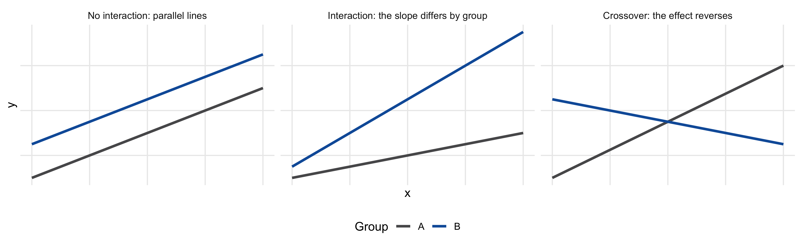
Figure 6.1 shows what an interaction looks like when \(z\) is a group indicator: without interaction, the lines for the two groups are parallel (same slope, different level); with an interaction, the slopes differ; and in a crossover, the effect of \(x\) changes sign between groups. The interaction coefficient \(\beta_3\) is simply the difference between the two slopes.
In a formula, x * z is shorthand for x + z + x:z — both variables and their product. Writing x:z alone (without the main terms) is the mistake described above; x * z always does the right thing.
This is the most common interaction in practice, and it has two faces: a treatment effect that differs between groups, and a slope that differs between groups. They are the same model.
Does Smart Mix help free users more than Premium users? The raw means (Figure 6.2) suggest so: among free users, the Smart Mix group listens about 4.6 hours more than the control group; among Premium users, about 1 hour more.
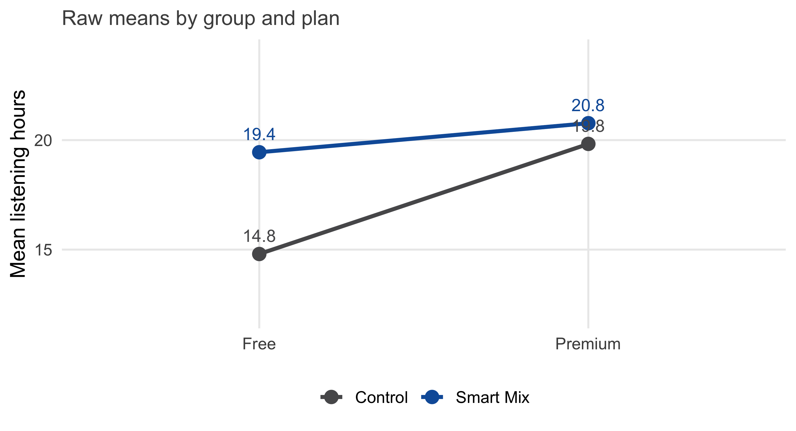
The regression with the interaction smart_mix * premium quantifies this and adds the uncertainty:
model_plan <- lm(hours ~ smart_mix * premium + prior_hours + tenure, data = wave2)
summary(model_plan)
Call:
lm(formula = hours ~ smart_mix * premium + prior_hours + tenure,
data = wave2)
Residuals:
Min 1Q Median 3Q Max
-17.889 -3.336 0.164 3.422 15.940
Coefficients:
Estimate Std. Error t value Pr(>|t|)
(Intercept) 1.55997 0.46882 3.33 0.0009 ***
smart_mix 4.99874 0.37835 13.21 < 2e-16 ***
premium 2.68460 0.43130 6.22 6.7e-10 ***
prior_hours 0.75163 0.01709 43.97 < 2e-16 ***
tenure 0.02791 0.00857 3.26 0.0012 **
smart_mix:premium -3.11146 0.59005 -5.27 1.6e-07 ***
---
Signif. codes: 0 '***' 0.001 '**' 0.01 '*' 0.05 '.' 0.1 ' ' 1
Residual standard error: 5.02 on 1194 degrees of freedom
Multiple R-squared: 0.65, Adjusted R-squared: 0.649
F-statistic: 444 on 5 and 1194 DF, p-value: <2e-16Reading the coefficients with the marginal-effect rule:
smart_mix (5): the effect of Smart Mix for free users (premium = 0).smart_mix:premium (-3.11): how much the effect differs for Premium users. Its p-value tests whether the two effects differ — this is the test of heterogeneity.premium (2.68): the difference between Premium and free users in the control group (smart_mix = 0) — not an overall Premium effect.Figure 6.3 shows both effects with their confidence intervals. The confidence interval of the Premium effect is not in the output; it has to be computed from the coefficients and their covariance (Section 6.5.4 does this for you). Smart Mix helps free users a lot and Premium users a little — a finding the product team can act on: the feature is worth promoting to free users first.
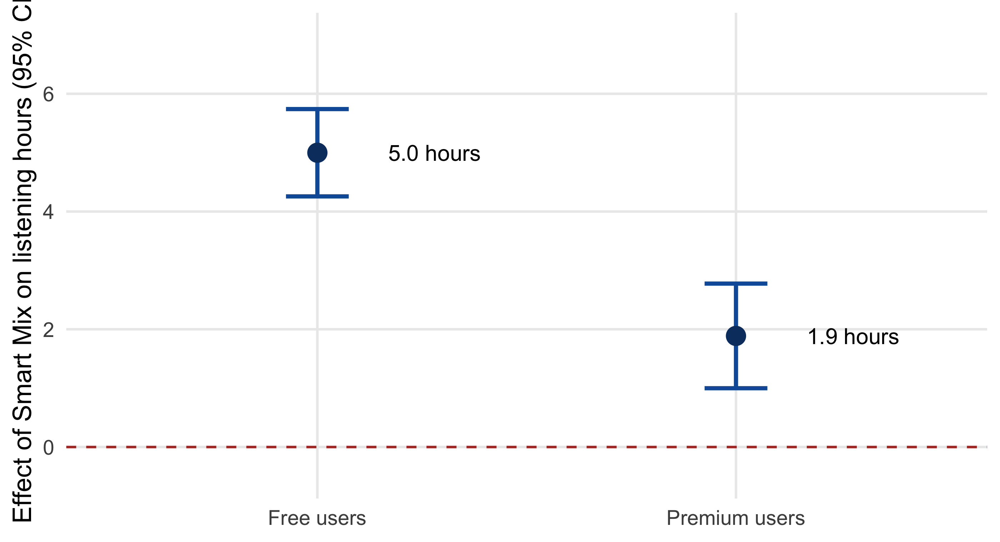
The same model structure answers a different-looking question. In the promotion campaigns of Chapter 5 (a second year of campaigns, promo), does the elasticity of streams with respect to spend differ between genres? Here the continuous variable is log(spend) and the groups are genres:
promo <- read_csv("https://raw.githubusercontent.com/wu-rds/MA2026/main/data/promo_campaigns.csv") |>
mutate(genre = factor(genre, levels = c("Pop", "HipHop/Rap", "Rock", "Electro/Dance")))model_genre <- lm(log(streams) ~ log(spend) * genre + log(followers) + placements, data = promo)
coef(summary(model_genre)) Estimate Std. Error t value Pr(>|t|)
(Intercept) -3.647669 0.32117 -11.35740 3.582e-27
log(spend) 0.205773 0.03335 6.17085 1.263e-09
genreHipHop/Rap -2.057895 0.42998 -4.78601 2.153e-06
genreRock 0.355791 0.65436 0.54372 5.868e-01
genreElectro/Dance 0.021026 0.61564 0.03415 9.728e-01
log(followers) 0.506830 0.01515 33.45649 2.114e-138
placements 0.121776 0.01067 11.41672 2.050e-27
log(spend):genreHipHop/Rap 0.267960 0.05175 5.17755 3.088e-07
log(spend):genreRock -0.052609 0.07863 -0.66909 5.037e-01
log(spend):genreElectro/Dance 0.005161 0.07566 0.06822 9.456e-01log(spend) (0.21) is the spend elasticity for Pop, the reference genre; log(spend):genreHipHop/Rap (0.27) says that the elasticity for HipHop/Rap is higher by that amount — 0.47 in total (Figure 6.4). For Rock and Electro/Dance, the interaction terms are small and not significant: no evidence that their elasticities differ from Pop’s. The genre main effects (genreHipHop/Rap etc.) are the level differences at log(spend) = 0, i.e., at a spend of 1 euro — a reminder that main effects in an interaction model refer to the zero of the other variable.
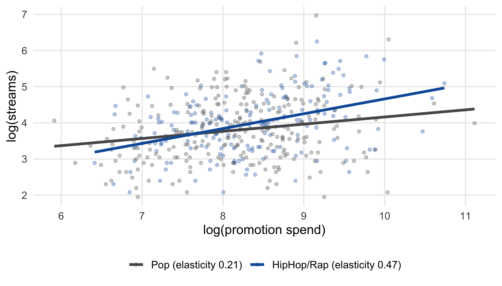
Does the effect of Smart Mix depend on how much a user listened before? Now the moderator is continuous, and the interaction smart_mix * prior_hours lets the Smart Mix effect change by a constant amount per hour of prior listening:
model_prior <- lm(hours ~ smart_mix * prior_hours + premium + tenure, data = wave2)
coef(summary(model_prior)) Estimate Std. Error t value Pr(>|t|)
(Intercept) 1.44632 0.531792 2.720 6.629e-03
smart_mix 5.39147 0.660399 8.164 8.167e-16
prior_hours 0.79749 0.023165 34.426 5.739e-181
premium 1.04070 0.300601 3.462 5.550e-04
tenure 0.02724 0.008642 3.152 1.661e-03
smart_mix:prior_hours -0.09642 0.034173 -2.822 4.857e-03The marginal effect of Smart Mix is 5.39 + (-0.096) × prior hours: about 4.4 hours for a user who listened 10 hours before, and 2.5 hours for one who listened 30 (Figure 6.5). The interaction is significant: Smart Mix helps light listeners more. Note again that smart_mix alone (5.39) is the effect for a user with zero prior listening — a user who hardly exists in the data. With a continuous moderator, always report the effect at a few meaningful values (e.g., the 10th, 50th, and 90th percentiles) or as a curve.
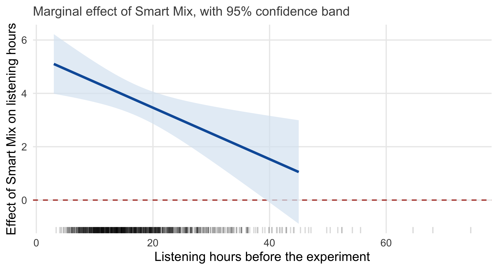
A marginal effect such as \(\beta_1 + \beta_3 z\) is a combination of two estimated coefficients, so its standard error depends on both their standard errors and their covariance: \(\text{SE} = \sqrt{V_{11} + z^2 V_{33} + 2 z V_{13}}\), where \(V\) is the covariance matrix of the coefficients, vcov(model). This is what Figure 6.5 and Figure 6.3 compute. In practice, packages do it for you: emmeans::emtrends() for slopes by group, emmeans::emmeans() for group means, and the interactions package for plots of marginal effects.
Fit the interaction of Smart Mix with device: lm(hours ~ smart_mix * device + prior_hours + premium + tenure, data = wave2). For which device is the effect of Smart Mix largest? Compute the effect for each device from the coefficients, and check whether the differences are significant.
When both interacting variables are continuous, the model is the same, but the interpretation needs more care. In the campaign data, is the spend elasticity larger for artists with a bigger follower base — do promotion and reach reinforce each other?
model_cc <- lm(log(streams) ~ log(spend) * log(followers) + placements + genre, data = promo)
coef(summary(model_cc)) Estimate Std. Error t value Pr(>|t|)
(Intercept) 5.40991 1.50566 3.593 3.540e-04
log(spend) -0.89608 0.18284 -4.901 1.234e-06
log(followers) -0.42218 0.14263 -2.960 3.201e-03
placements 0.12058 0.01054 11.435 1.687e-27
genreHipHop/Rap 0.16537 0.04390 3.767 1.815e-04
genreRock -0.09564 0.05888 -1.624 1.048e-01
genreElectro/Dance 0.06549 0.05803 1.129 2.595e-01
log(spend):log(followers) 0.11309 0.01732 6.528 1.433e-10The interaction (0.113) is clearly positive: the spend elasticity grows with the follower base. But the “main effects” look absurd — log(spend) is -0.9, a negative elasticity. The marginal-effect rule explains why: log(spend) is the elasticity for an artist with log(followers) = 0, i.e., with one follower. Nobody in the data is anywhere near that.
The fix is to center the interacting variables at their means before forming the product. The interaction coefficient does not change; the main effects become the marginal effects at the mean of the other variable:
promo_c <- promo |>
mutate(log_spend_c = log(spend) - mean(log(spend)),
log_fol_c = log(followers) - mean(log(followers)))
model_cc_centered <- lm(log(streams) ~ log_spend_c * log_fol_c + placements + genre, data = promo_c)
coef(summary(model_cc_centered)) Estimate Std. Error t value Pr(>|t|)
(Intercept) 3.41055 0.04401 77.500 3.908e-312
log_spend_c 0.29931 0.02248 13.314 1.442e-35
log_fol_c 0.50847 0.01501 33.870 1.179e-140
placements 0.12058 0.01054 11.435 1.687e-27
genreHipHop/Rap 0.16537 0.04390 3.767 1.815e-04
genreRock -0.09564 0.05888 -1.624 1.048e-01
genreElectro/Dance 0.06549 0.05803 1.129 2.595e-01
log_spend_c:log_fol_c 0.11309 0.01732 6.528 1.433e-10Now log_spend_c (0.3) is the spend elasticity for an artist with an average (log) follower count, and the interaction says that it rises by 0.113 for each unit of log followers — that is, each time the follower base grows by a factor of about 2.7. Figure 6.6 plots the marginal effect across the follower distribution: for an artist at the 10th percentile, promotion barely pays; at the 90th, the elasticity is about 0.49.
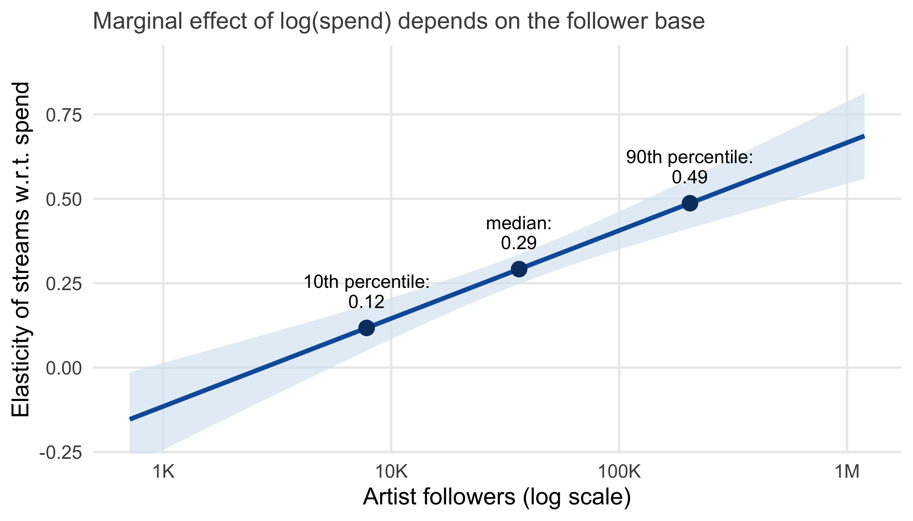
Two practical notes. First, centering is cosmetic for the interaction and the model’s fit (predictions are identical), but essential for reading the main effects. Second, with two continuous variables, a plot of the marginal effect — or predicted values at a few combinations — communicates far better than the coefficient table.
Centering subtracts the mean; standardizing additionally divides by the standard deviation. Either changes the main effects (now interpreted at the mean) and the intercept, but not the interaction coefficient (for centering) or the model fit. An old recommendation was that centering reduces multicollinearity between \(x\), \(z\), and \(x \times z\). It does lower the correlation between the terms, but it does not change the standard error of the interaction or any marginal effect — the gain is interpretability, not precision.
Interactions between two categorical variables are the natural analysis of factorial experiments, in which two treatments are manipulated at once. The streaming service’s marketing team wanted to know whether ads designed with AI are judged as creative as ads designed by humans — and whether it matters if people know who made them. 360 respondents each saw one ad for the service and rated its creativity (0–100). The design has two factors: the source of the design (made by a human, by AI, or by a human with AI) and the disclosure of the source (revealed to the respondent or not). Each of the 2 × 3 = 6 combinations — the cells — had 60 respondents, assigned at random.
ads <- read_csv("https://raw.githubusercontent.com/wu-rds/MA2026/main/data/ad_designs.csv") |>
mutate(source = factor(source, levels = c("Human", "AI", "Human + AI")),
disclosure = factor(disclosure, levels = c("Revealed", "Not revealed")))The cell means tell the story (Figure 6.7): when the source is revealed, human designs are rated clearly more creative than AI or hybrid designs. When it is not revealed, the AI and hybrid designs are rated as creative as the human ones — in fact slightly higher. The effect of the source depends on disclosure: a textbook interaction, with crossing lines.
ads |>
group_by(source, disclosure) |>
summarise(n = n(), mean_creativity = mean(creativity), .groups = "drop")# A tibble: 6 × 4
source disclosure n mean_creativity
<fct> <fct> <int> <dbl>
1 Human Revealed 60 61.8
2 Human Not revealed 60 52.1
3 AI Revealed 60 48.3
4 AI Not revealed 60 60.8
5 Human + AI Revealed 60 43.6
6 Human + AI Not revealed 60 62.0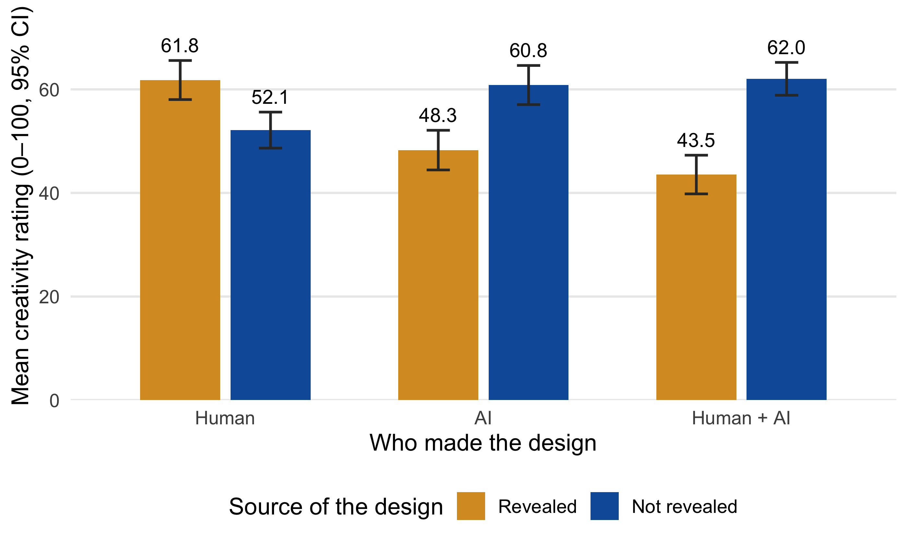
The regression with source * disclosure reproduces the six cell means with six coefficients. With the reference categories Human and Revealed, each coefficient has a precise meaning (Table 6.2):
model_ads <- lm(creativity ~ source * disclosure, data = ads)
coef(summary(model_ads)) Estimate Std. Error t value Pr(>|t|)
(Intercept) 61.800 1.854 33.330 3.247e-111
sourceAI -13.533 2.622 -5.161 4.101e-07
sourceHuman + AI -18.250 2.622 -6.960 1.659e-11
disclosureNot revealed -9.667 2.622 -3.686 2.630e-04
sourceAI:disclosureNot revealed 22.233 3.708 5.996 5.003e-09
sourceHuman + AI:disclosureNot revealed 28.150 3.708 7.591 2.844e-13| Coefficient | Value | Meaning |
|---|---|---|
(Intercept) |
61.8 | Mean rating of human designs when the source is revealed (the reference cell) |
sourceAI |
-13.5 | AI designs, when revealed, are rated this much lower than human designs |
sourceHuman + AI |
-18.2 | Hybrid designs, when revealed, are rated this much lower than human designs |
disclosureNot revealed |
-9.7 | Human designs are rated this much lower when the source is not revealed |
sourceAI:disclosureNot revealed |
22.2 | AI designs gain this much extra when the source is not revealed, beyond what the two main effects would predict |
sourceHuman + AI:disclosureNot revealed |
28.1 | The same for hybrid designs |
Any cell mean can be rebuilt from these: the mean for AI designs with the source not revealed is 61.8 + (-13.5) + (-9.7) + 22.2 = 60.8. The interaction coefficients are large and significant: disclosure changes the ranking of the designs.
With several categories per factor, the question “is there an interaction?” involves several coefficients at once (here two). The ANOVA table tests each factor and the interaction as a whole, the same logic as the ANOVA in Chapter 4:
anova(model_ads)Analysis of Variance Table
Response: creativity
Df Sum Sq Mean Sq F value Pr(>F)
source 2 1055 527 2.56 0.079 .
disclosure 1 4572 4572 22.17 3.6e-06 ***
source:disclosure 2 13218 6609 32.04 1.6e-13 ***
Residuals 354 73021 206
---
Signif. codes: 0 '***' 0.001 '**' 0.01 '*' 0.05 '.' 0.1 ' ' 1The interaction source:disclosure is highly significant: the effect of the source depends on disclosure. When the interaction is significant, the main effects should not be interpreted on their own — “AI designs are rated lower on average” is true only when averaged over a condition in which they are rated higher and one in which they are rated lower.
The interaction tells us that the effect of the source depends on disclosure; it does not tell us which cells differ. For that, we compare the cell means pairwise, with the usual correction for multiple comparisons (Chapter 4). The emmeans package computes the estimated marginal means — the model’s predicted cell means with their standard errors — and the pairwise contrasts:
library(emmeans)
emm <- emmeans(model_ads, ~ source | disclosure)
emmdisclosure = Revealed:
source emmean SE df lower.CL upper.CL
Human 61.8 1.85 354 58.1 65.5
AI 48.3 1.85 354 44.6 51.9
Human + AI 43.5 1.85 354 39.9 47.2
disclosure = Not revealed:
source emmean SE df lower.CL upper.CL
Human 52.1 1.85 354 48.5 55.8
AI 60.8 1.85 354 57.2 64.5
Human + AI 62.0 1.85 354 58.4 65.7
Confidence level used: 0.95 pairs(emm)disclosure = Revealed:
contrast estimate SE df t.ratio p.value
Human - AI 13.53 2.62 354 5.161 <.0001
Human - (Human + AI) 18.25 2.62 354 6.960 <.0001
AI - (Human + AI) 4.72 2.62 354 1.799 0.1715
disclosure = Not revealed:
contrast estimate SE df t.ratio p.value
Human - AI -8.70 2.62 354 -3.318 0.0029
Human - (Human + AI) -9.90 2.62 354 -3.775 0.0005
AI - (Human + AI) -1.20 2.62 354 -0.458 0.8910
P value adjustment: tukey method for comparing a family of 3 estimates The output answers the question at the level a manager needs: when the source is revealed, human designs beat both AI (by about 14 points) and hybrid designs, which do not differ from each other; when the source is not revealed, the ranking flips, and the AI and hybrid designs beat the human one by about 9–10 points. The p-values are Tukey-adjusted for the three comparisons within each disclosure condition. This two-step logic — an overall test of the interaction, then corrected comparisons of the cells — is the same as for the one-way ANOVA, with one extra dimension.
anova() on an lm object produces sequential (Type I) sums of squares: each term is tested after the terms listed before it. With equal cell sizes — a balanced design, as here — the order does not matter and all common ANOVA tables agree. With unbalanced cells (different numbers of respondents, typical for survey experiments with dropouts), the sequential table depends on the order of the factors; car::Anova(model_ads, type = 2) gives the usual order-independent tests. The regression coefficients and the emmeans results are not affected by this issue.
Rebuild the cell mean for hybrid designs with the source not revealed from the coefficients of model_ads, and check it against the table of cell means. Then: which single number in the regression output answers the question “does disclosure change the rating of hybrid designs more than it changes the rating of human designs”?
Heterogeneity is where analytics gets interesting — and where it goes wrong most easily.
Subgroup fishing. Any data set with a few covariates offers dozens of possible subgroups: by plan, device, tenure, age, country, prior listening, and all their combinations. Testing the effect in every subgroup is multiple testing (Chapter 4): with 20 subgroups and no true heterogeneity at all, the chance of finding at least one “significant” subgroup effect is \(1 - 0.95^{20}\) = 64% (Figure 6.8). A subgroup effect found this way is far more likely to be noise than a discovery — and it will not replicate.
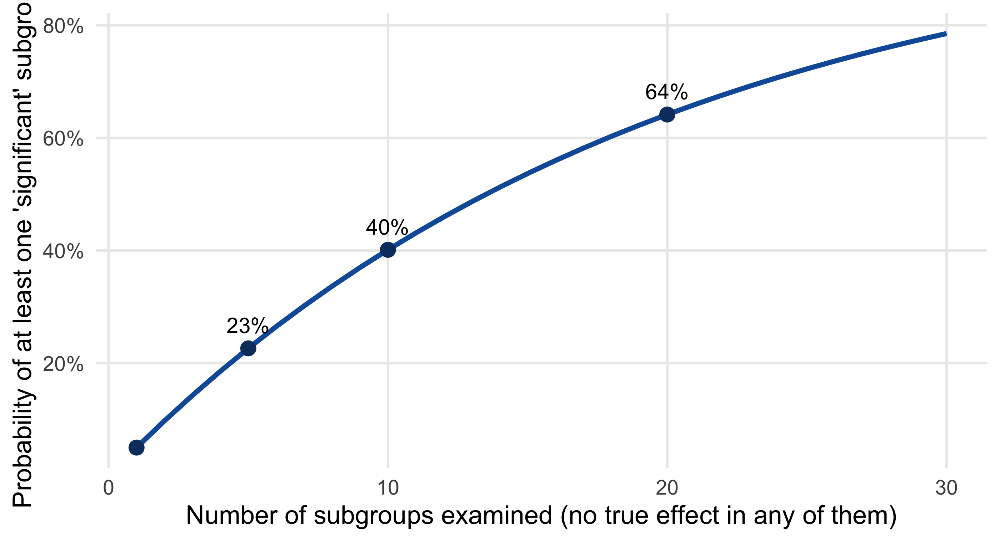
Interactions need large samples. A difference between two effects is estimated far less precisely than an effect itself: for two groups of equal size, the standard error of the difference between their effects is twice the standard error of the overall effect, so detecting an interaction of the same size as a main effect needs about four times as many participants (Figure 6.9). Underpowered interaction tests do double damage: they miss real heterogeneity, and the heterogeneity they do find tends to be exaggerated.
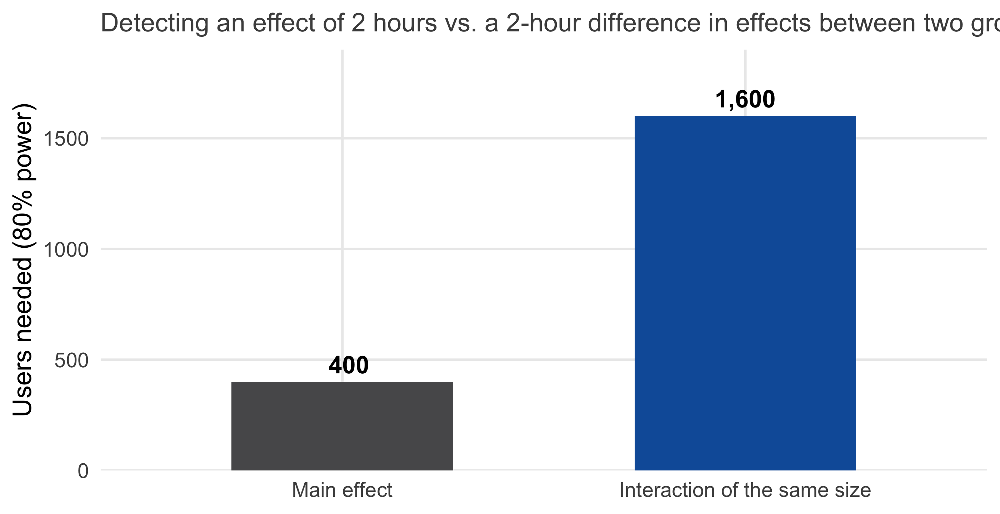
What to do instead. Decide before the experiment which moderators you expect, and why — and pre-register them (Chapter 4). Test those with the interaction model of this chapter. Everything else is exploratory: report it as a hypothesis for the next experiment, not as a finding of this one. And when the interaction is not significant, say “we found no evidence that the effect differs”, not “the effect is the same for everyone” — an underpowered test cannot show that.
In a two-group experiment with \(n\) users per group, the standard error of the treatment effect is about \(\sigma \sqrt{2/n}\). Splitting the sample into two equal subgroups and comparing their effects gives a standard error of \(\sigma \sqrt{2/(n/2)} \cdot \sqrt{2} = 2 \sigma \sqrt{2/n}\) — twice as large. Because the required sample size grows with the square of the standard error, the interaction needs four times the sample for the same power, if it is as large as the main effect. Interactions are typically smaller than main effects, which makes the ratio worse. power.t.test() with the appropriate standard deviation, or a simulation, gives the exact numbers for a planned design.
Back to the product team’s second question. Smart Mix increases listening time — but how? The hypothesis: Smart Mix makes users discover new artists, and discovering new artists makes them listen more. If this is right, part of the effect of Smart Mix runs through discovery, and the rest does not (Figure 6.10):
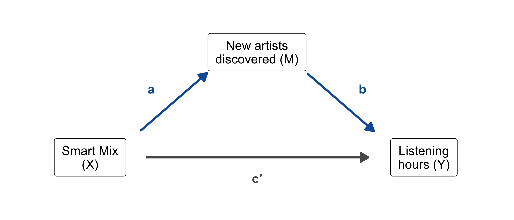
Mediation analysis estimates the three paths with regressions. First, does Smart Mix affect the mediator (path a)?
model_m <- lm(new_artists ~ smart_mix + prior_hours + premium, data = wave2)
coef(summary(model_m))["smart_mix", ] Estimate Std. Error t value Pr(>|t|)
3.619e+00 1.411e-01 2.565e+01 5.824e-116 Yes: Smart Mix users discovered 3.6 more new artists. Second, does the mediator affect the outcome, holding Smart Mix constant (path b), and what is left of the Smart Mix effect once the mediator is in the model (the direct effect c′)?
model_y <- lm(hours ~ smart_mix + new_artists + prior_hours + premium + tenure, data = wave2)
coef(summary(model_y))[c("smart_mix", "new_artists"), ] Estimate Std. Error t value Pr(>|t|)
smart_mix 2.3063 0.35959 6.414 2.042e-10
new_artists 0.3909 0.05918 6.606 5.916e-11Each new artist goes with 0.39 additional listening hours (b), and the direct effect of Smart Mix, with discovery held constant, is 2.31 hours (c′) — down from the total effect of 3.72. The indirect effect is the product of the two path coefficients:
a <- coef(model_m)["smart_mix"]
b <- coef(model_y)["new_artists"]
indirect <- a * b
c(indirect = unname(indirect), direct = unname(coef(model_y)["smart_mix"]), total = unname(indirect + coef(model_y)["smart_mix"]))indirect direct total
1.415 2.306 3.721 About 1.41 of the 3.72 hours — 38% of the effect — run through the discovery of new artists; the rest is direct. For the product team, this means: discovery is an important mechanism, but not the only one, and improving the discovery feature can be expected to improve roughly a third of the effect.
The indirect effect is a product of two estimates, and its sampling distribution is not normal, so the usual formula for a standard error does not apply. The standard solution is the bootstrap (Chapter 3): resample the users with replacement, re-estimate both regressions, and look at the distribution of the product:
set.seed(1)
boot_indirect <- replicate(2000, {
idx <- sample(nrow(wave2), replace = TRUE)
d_boot <- wave2[idx, ]
coef(lm(new_artists ~ smart_mix + prior_hours + premium, data = d_boot))["smart_mix"] *
coef(lm(hours ~ smart_mix + new_artists + prior_hours + premium + tenure, data = d_boot))["new_artists"]
})
quantile(boot_indirect, c(0.025, 0.975)) 2.5% 97.5%
0.9861 1.8632 The 95% bootstrap interval of the indirect effect excludes zero: the mediation is statistically reliable. Reporting a mediation analysis means reporting all three numbers with their uncertainty: the total effect, the direct effect, and the indirect effect with its bootstrap interval — plus the share of the effect that is mediated.
The mediation package (Imai et al. 2010) automates the procedure: mediate(model_m, model_y, treat = "smart_mix", mediator = "new_artists", boot = TRUE) returns the average causal mediation effect (ACME, the indirect effect), the average direct effect (ADE), the total effect, and the proportion mediated, each with bootstrap confidence intervals — and it handles non-linear outcome models, such as logistic regression for a yes/no outcome. With several candidate mediators (discovery, playlist use, notifications), each can be examined in turn, but their indirect effects are only separable if the mediators do not affect each other — an assumption that needs an argument.
The widget shows the catch. Randomizing Smart Mix identifies the total effect: users were assigned by coin flip, so the groups are comparable. But nobody randomized the mediator. Users who discovered many new artists chose to do so — perhaps because they are curious, or had time on their hands — and such users may listen more for the same reasons. The path b then mixes the effect of discovery with the effect of curiosity, exactly the confounding problem of Chapter 5, one step down the causal chain. The decomposition into direct and indirect effects is only valid if there are no unobserved confounders of the mediator–outcome relationship (given the treatment and the covariates). This assumption is as untestable as its cousin in Chapter 5, and it is the reason why mediation results deserve more caution than the total effect they decompose. What helps: measuring and adjusting for likely confounders of the mediator (prior listening and plan are in the models above for this reason), and — best of all — experiments that manipulate the mediator directly, e.g., a version of Smart Mix with and without the discovery feature.
The question “which variables should be in the model?” has come up in every chapter since Chapter 1. The three elementary structures in Figure 6.11 organize the answers (Cinelli et al. 2024).
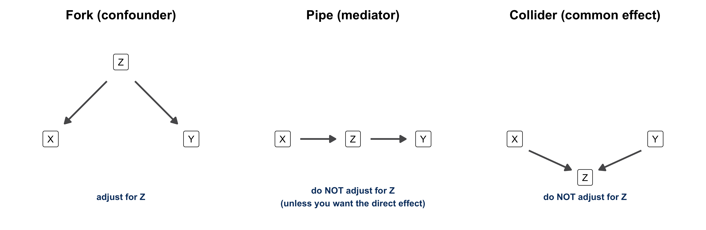
The practical rule: adjust for forks, never for colliders, and for pipes only when you want the direct effect. Since the structure cannot be read from the data, drawing the diagram before the analysis — which variable is caused by what — is the most useful ten minutes of any observational study.
The decomposition of a total effect into direct and indirect effects requires sequential ignorability: (1) the treatment is as good as randomly assigned given the covariates, and (2) the mediator is as good as randomly assigned given the treatment and the covariates. In a randomized experiment, (1) holds by design; (2) is the untestable part, and it is the mediator-outcome confounding shown in the widget. The DAG vocabulary makes it precise: any unobserved fork between M and Y violates (2). Sensitivity analyses (e.g., medsens() in the mediation package) show how strong such a confounder would have to be to explain the mediation away.
Your experiment randomizes one factor with two or three conditions and measures one or more outcomes with about 120 respondents. Here is how this chapter applies.
Should you add a moderator? Only if the moderation question is central to your topic and you can state in advance which direction you expect — e.g., “the effect of the sustainability label should be larger for respondents who care about the environment”. Measure the moderator before the manipulation (so that it cannot be affected by it), and test it with outcome ~ condition * moderator. Keep expectations modest: with 60 respondents per condition, you can detect only large interactions. A 2 × 2 design (two manipulated factors) is the cleaner way to study a moderator you can manipulate, but it spreads your respondents over four cells of 30 — enough for a demonstration, rarely for a precise estimate.
Should you measure a mediator? Measuring one or two plausible mechanisms after the manipulation (e.g., perceived quality, trust, attention) costs little and allows a mediation analysis — with the caveats of Section 6.7 stated honestly. It also protects you against the empty result “the manipulation had no effect”: a manipulation check and a mediator tell you where the chain broke.
Reporting. Moderation: “The effect of the label was 0.9 scale points for environmentally concerned respondents and 0.2 for the others; the interaction was significant (p = .03) / not significant (p = .40), so we found no evidence that the effect differs.” Mediation: “Of the total effect of 0.6 points, 0.25 (bootstrap 95% CI [0.05; 0.48]) ran through perceived quality.” And in both cases: which analyses were planned, and which were exploratory.
The course started with four kinds of questions. By now, you have tools for all of them: description (Chapter 2), prediction (Chapter 5), causal effects from experiments (Chapter 4) and — with assumptions — from observational data (Chapter 5), and in this chapter, the two questions that come after the effect: for whom, and why. The prescriptive question — what should we do? — is where all of them meet: an action that works on average, for the right customers, for understood reasons, and whose effect size justifies its cost.
The toolkit is a regression with a product term, used in two ways. Moderation asks whether the effect differs across values of a third variable; mediation asks whether the effect passes through it. Both are more demanding than the average effect — statistically (interactions need large samples; indirect effects need the bootstrap) and conceptually (mediation needs an assumption that randomization does not provide). Used with these limits in mind, they turn a yes/no result into something a product team can build on.
(LC6.1) In the model hours ~ smart_mix * premium + prior_hours, the coefficient of smart_mix is 5.0 and the coefficient of smart_mix:premium is −3.1. What is the effect of Smart Mix for free users? For Premium users? What does the p-value of the interaction test?
(LC6.2) Which statements about interaction models are correct?
(LC6.3) A marketing team finds that a discount increases purchases by 12% among new customers and by 2% among existing customers. The interaction has p = 0.08 with 150 customers per group. How should the result be reported?
(LC6.4) In a 2 × 2 experiment (price framing: monthly vs. yearly; trial: yes vs. no), the regression gives: intercept 40, framingYearly −5, trialYes +8, framingYearly:trialYes +6. Compute all four cell means. Does the trial help more with monthly or with yearly framing?
(LC6.5) After a significant interaction in a 2 × 3 design, why are pairwise comparisons of the six cells with ordinary t-tests a problem, and what does emmeans do about it?
(LC6.6) Which statements about mediation analysis are correct?
(LC6.7) An analyst wants to estimate the total effect of a loyalty program on annual spending and includes “number of store visits” as a control variable. Which structure is this (fork, pipe, or collider), and what is the consequence?
(LC6.8) A study of top-rated restaurants finds that price and food quality are negatively correlated among them. Explain how a collider could produce this result even if price and quality are unrelated in the population of all restaurants.
(LC6.9) A colleague tests the effect of a new checkout page in 25 customer segments and reports that it “works particularly well for returning customers on tablets” (p = 0.02). What is the problem, and what would you recommend for the next test?
(LC6.10) Your group project experiment compares two versions of a product description. Name one plausible moderator and one plausible mediator for your effect, and explain for each when you would measure it in the questionnaire.